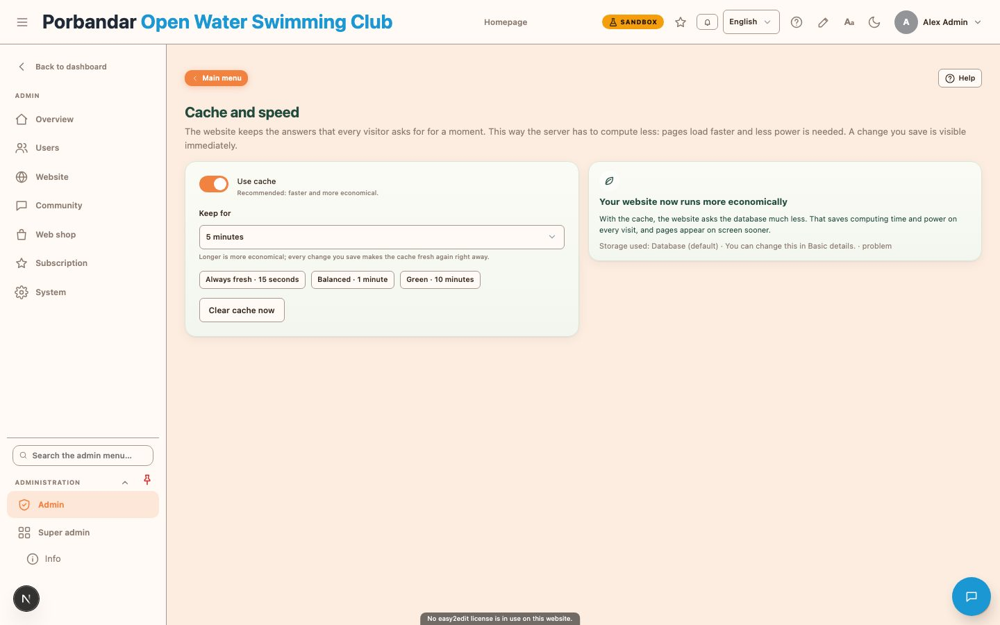
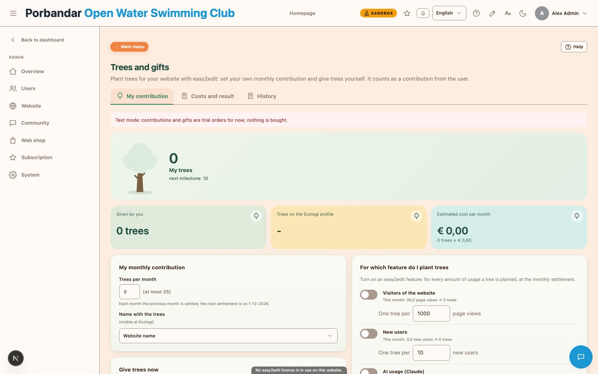
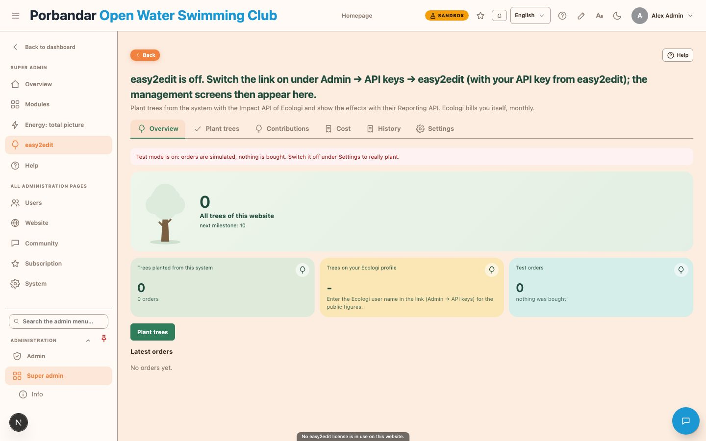
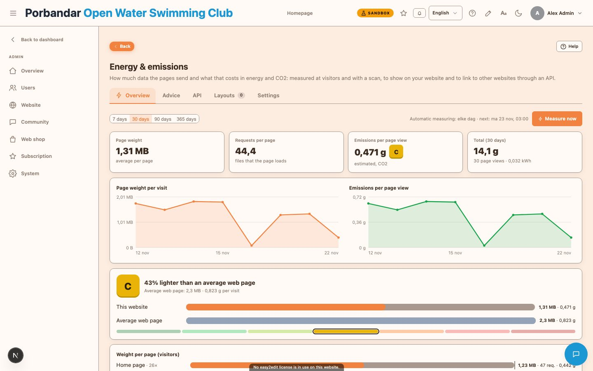

11. Plugins, backups, licence and deployment
This chapter explains how to manage plugins, protect your site with backups, understand your licence and pricing, and deploy and maintain easy2edit, including the system's built-in tree-planting features.
Video: Backup and restore (English voice-over also in Nederlands)
Video: Plugins and licence (English voice-over also in Nederlands)

Plugins#
Plugins are managed from Admin > Plugins. They are signed packages stored in /plugins and can be installed from the library (resource/plugins), switched on or off, and updated.
A plugin can bring its own pages, modules, translations (44 languages) and admin screens. If a plugin has demo content, its page in Admin > Plugins (tab Overview) shows a button:
- 'Make demo content' when no demo content exists yet.
- 'Remove demo content' once it has been created, letting you take it away again.
Resetting the system also removes any demo content.
The module API keys is always on in every standard installation. The superadmin links (AI, Stripe, mail, storage) are switched on automatically when an installation is set up, so they keep working, but the secret keys themselves are never stored in the installations file. A link marked Superadmin link is only visible and editable by superadmins.
Resetting the system (Super admin > System > Reset) asks whether AI data in the database should be removed too, meaning all AI calls with costs plus the credit history and credit of superadmins (the AI settings themselves stay). The credit of normal users disappears automatically when those users are removed.

Importing a site#
Admin lets you import another website from an address, folder, ZIP file or a single HTML file, bringing in its theme, pages, home page, icons and images. When importing a single HTML file, Claude builds the theme, pages and content, and switches on the modules that are needed. An imported site can be removed again, together with everything that came with it.

Backups#
Backups are available in Admin > Backups, with daily, weekly and monthly backups covering pages, menus, texts, images, the theme and the settings of modules and plugins.
Practical steps:
- In the backup list, click Download to download a backup at once; progress is shown with a progress bar.
- Click Make backup now to create a fresh backup. You will then be asked whether to download it, keep it locally, or both.
- After uploading a backup file, easy2edit immediately asks whether you want to restore it.
A restore brings back the logo, base data, theme and licence data exactly, and shows them right away. Back office loaders stay small during these actions; the large loader appears as its own layer in the middle of the window only for bigger operations.
The standard installations basis (installations.json) is part of the system itself. As with plugins and API keys, secret keys are never stored in this file.

Licence and pricing#
Admin > Licence shows the cost and payment method of your licence, either Stripe or invoice. The price follows directly from the modules and plugins that are switched on.
Super admin > Prices holds the full price list per month, quarter and year, together with quotations as PDF, marketing tiles and the sales calculation used to work out pricing.

Deployment#
easy2edit is deployed with Docker, using separate compose files for development and production. A reverse proxy and certificates handle secure access, and the backend runs database migrations automatically on start.
Every installation shows its version in the format 'easy2edit version 1.0.0 build X', sourced from one central place: backend/BUILD.

SEO and site visibility#
easy2edit helps search engines, bots and AI agents understand your site through robots.txt, a sitemap, llms.txt, page titles, descriptions and structured data.

Statistics#
Admin statistics show graphs and figures for the whole website: visitors, SEO, bots and AI calls, plus a separate tab per module and plugin. Modules and plugins write their own figures here; if a plugin is switched off, nothing is counted for it.

Trees and gifts#
easy2edit can plant trees through Ecologi, reflecting the site's own energy and growth.
At superadmin level, the module 'ecologi' adds a Super admin menu item 'easy2edit' with a page containing the tabs Overview, Plant trees, Contributions, Costs, History and Settings, plus a block 'easy2edit: trees and contributions' on the Super admin overview, showing a growing tree, tiles, charts and costs. This requires an Ecologi link in Admin > API keys (Impact API key, with an optional username for public figures).
Four sources contribute trees:
- Website visitors, one tree per N page views.
- Machine and energy use, offsetting estimated CO2.
- Use of easy2edit by the user, a fixed number of trees per month.
- Trees planted by easy2edit itself.
A monthly maximum limits automatic settlement, and test mode is on by default, so nothing is actually purchased until switched off. Trees are named after the website or after easy2edit.
At site level, Admin > System > Trees and gifts (module 'ecologi_admin') lets an administrator set a monthly contribution, choose per function, visitors, new users, AI use, energy use, a 'one tree per N' rate, set a maximum per month, and give trees immediately. Its tabs are My contribution, Costs and result, and History.
On the easy2edit server, the Site manager shows a Trees tab per website (status, trees, expected costs per part, costs per month, switches and monthly maximum), and an overview 'Plant trees: all websites' reachable from the Site manager page, listing figures per company and per website with totals. The Site manager also has a Websites tab to update websites or force an update.
On the public website, next to 'powered by (c) easy2edit <year>', a leaf icon opens an energy window with two tabs: 'Plant trees' (showing a tree filling toward its next milestone, the donated amount, this month's figures, sources, a chart and a 'More info' link to https://easy2edit.com/#groen) and 'Energy'.
The installation wizard includes a step 'Plant trees'; the Ecologi link to easy2edit is always on.
Cache and energy advice#
The cache can be shared across the system, using the database by default, or Redis or memory, configured in Admin > System, alongside a system cache for speed and related energy advice.
Admin > Cache lets you choose where the cache is kept (database, memory or Redis), set how many seconds the system cache lasts (5 minutes by default), and restart the cache with a button. Redis is installed by the deployment script as a service and is used by default when it responds; if Redis is unavailable, the system falls back to the database.
Admin > Energy shows the website's energy label, energy advice in two columns with a switch per piece of advice, a run window with progress, cache advice, and AI prompt buttons for every open point. The energy label can also be shown on the website itself.
API keys and reseller defaults#
In Admin > API keys, a super admin has an Update button that checks keys against the easy2edit server and updates them when needed. This requires either a code sent by e-mail or SMS, or an account on easy2edit.com, the master server. During installation, keys travel encrypted inside an installation file locked with a password, and are unpacked and installed at the destination.
The default reseller tab always requires phone numbers with a country code, and the default settings tabs include a 'do not overwrite' option per tab, both standard parts of the settings.
Website design#
Admin > Website > Design is always present in the menu and as a tile. If a part of it is not installed or switched on, easy2edit prompts you to install and switch it on, showing the cost and the steps with progress. This section cannot be switched off.
Light and dark mode#
Screenshots, videos and help content in easy2edit exist in both light and dark mode. The HTML manual and Help show whichever mode the reader is using, while the PDF manual is always shown in light mode.